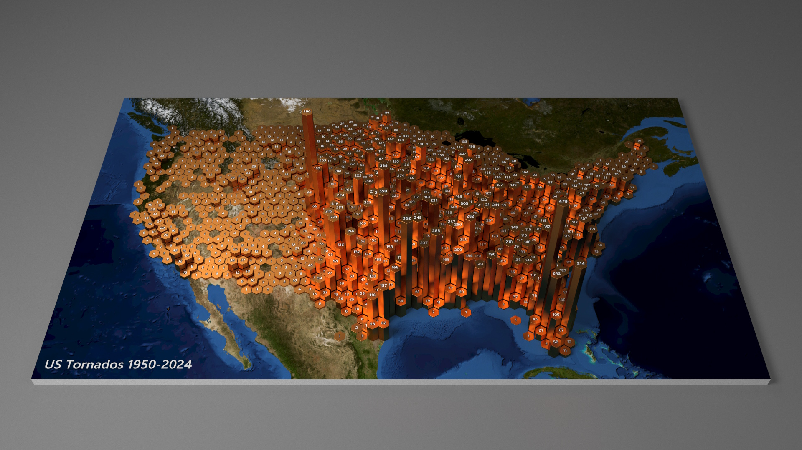

When working with geospatial data, it is generally desirable to include a map in the background to provide geographic context. One way to do this is to use a map image as a background texture.

Imagery courtesy of the U.S. Geological Survey National Map. Tornado data courtesy of the NOAA Storm Prediction Center.
This section walks through the key parts of the spec in Listing 1.
A Mercator projection is defined to convert
longitude and latitude in degrees to projected x and y coordinates in the
[-1, 1] range:
"projections": [
{
"name": "projection",
"type": "mercator"
}
]
The projection supports optional center, scale and translate
properties.
In this example, the projection is left at its default center of [0,0] and scale of 1.
The projected coordinates are instead subsequently adjusted using formula transforms to center the map and fill the
viewport.
A map image in a Mercator projection is loaded and its corner coordinates (longitude/latitude) are projected to
Mercator coordinates using the geopoint transform and the projection.
A pair of extent transforms captures these projected extents, which are used in two subsequent formula
transforms to center the coordinates at the midpoint of each axis.
A second pair of extent transforms captures these centered extents so they can be used to define a
scale.
"images": [
{"name": "map", "url": "img/..."}
],
"data": [
{
"name": "image",
"values": [
{ "lon": -129.375, "lat": 21.943046 },
{ "lon": -61.875, "lat": 52.48278 }
],
"transform": [
{"type": "geopoint", "projection": "projection", "fields": ["lon", "lat"], "as": ["xc", "zc"]},
{"type": "extent", "field": "xc", "signal": "imageExtentX"},
{"type": "extent", "field": "zc", "signal": "imageExtentZ"},
{"type": "formula", "expr": "datum.xc-(imageExtentX[0]+imageExtentX[1])/2", "as": "xc"},
{"type": "formula", "expr": "datum.zc-(imageExtentZ[0]+imageExtentZ[1])/2", "as": "zc"},
{"type": "extent", "field": "xc", "signal": "imageCenteredX"},
{"type": "extent", "field": "zc", "signal": "imageCenteredZ"}
]
}
]
The tornado data is loaded from a CSV file.
Each row contains a longitude and latitude, which are projected using a geopoint transform.
A pair of formula transforms centers the projected coordinates by subtracting the mid-point of the
image extent.
The image plane is defined as the xz plane (x corresponds to longitude, z
corresponds to latitude).
The z coordinate is flipped for right-hand coordinates, such
that an increase in latitude corresponds to a decrease in the z coordinate.
The hexbin transform divides the image extent into a hex grid and assigns each data row to a hex cell,
outputting the cell bounds as x0, x1, z0, and z1.
By using the image extent, we ensure the hex bins are sized consistently, regardless of the data extent.
{
"name": "table",
"url": "data/ustornados_1950-2024.csv",
"transform": [
{"type": "geopoint", "projection": "projection", "fields": ["slon", "slat"], "as": ["xc", "zc"] },
{"type": "formula", "expr": "datum.xc-(imageExtentX[0]+imageExtentX[1])/2", "as": "xc"},
{"type": "formula", "expr": "(imageExtentZ[0]+imageExtentZ[1])/2-datum.zc", "as": "zc"},
{
"type": "hexbin",
"fields": ["xc", "zc"],
"extent": {"signal": "[[imageCenteredX[0],imageCenteredZ[0]],[imageCenteredX[1],imageCenteredZ[1]]]"},
"maxbins": {"signal": "maxbins"},
"as": ["x0", "x1", "z0", "z1"]
}
]
}The hex-binned data is aggregated to count the number of rows in each hex cell:
{
"name": "aggregate",
"source": "table",
"transform": [
{
"type": "aggregate",
"groupby": ["x0", "x1", "z0", "z1"],
"ops": ["count"],
"as": ["count"]
}
]
}
A single linear scale maps the larger of the two projected, centered image extents to fill the plot dimensions
(width), ensuring uniform scaling across both x and z axes.
If a default camera is used, the plot will be sized to fit the image, so the longest dimension will fill the
vertical viewport.
Since the data has been centered using the image extent mid-point, the scale domain is symmetric around zero.
A second scale maps the count to the y axis (height):
"scales": [
{
"name": "xzscale",
"type": "linear",
"domain": {"signal": "imageCenteredX[1]>imageCenteredZ[1]?imageCenteredX:imageCenteredZ"},
"range": "width"
},
{
"name": "yscale",
"type": "linear",
"domain": {"data": "aggregate", "field": "count"},
"range": "height"
}
]
The map image is rendered as a textured rectangle in the xz plane, positioned using the image extents
through the xzscale.
The z texture coordinate is flipped for right-hand coordinates:
{
"type": "rect",
"from": {"data": "image"},
"geometry": "xzrect",
"encode": {
"enter": {
"x": {"scale": "xzscale", "signal": "imageCenteredX[0]"},
"x2": {"scale": "xzscale", "signal": "imageCenteredX[1]"},
"z": {"scale": "xzscale", "signal": "imageCenteredZ[0]"},
"z2": {"scale": "xzscale", "signal": "imageCenteredZ[1]"},
"fill": {"image": "map", "texScale": {"z": {"value": -1}}}
}
}
}The aggregated count for each hex cell is rendered as a single hexagonal prism, positioned using the hex cell bounds and scaled vertically by count. A rounding radius is set at 2% of the hex cell size:
{
"type": "rect",
"geometry": "hexprismsdf",
"material": "metal",
"from": {"data": "aggregate"},
"encode": {
"enter": {
"x": {"scale": "xzscale", "field": "x0", "offset": {"signal": "0.025*width/maxbins"}},
"x2": {"scale": "xzscale", "field": "x1", "offset": {"signal": "-0.025*width/maxbins"}},
"y": {"value": 10},
"y2": {"scale": "yscale", "field": "count", "offset": 10},
"z": {"scale": "xzscale", "field": "z0", "offset": {"signal": "0.025*width/maxbins"}},
"z2": {"scale": "xzscale", "field": "z1", "offset": {"signal": "-0.025*width/maxbins"}},
"rounding": {"signal": "0.02*width/maxbins"},
}
}
}Text labels showing the count are positioned on top of each hex prism, rotated to face upward:
{
"type": "text",
"from": {"data": "aggregate"},
"encode": {
"enter": {
"x": {"scale": "xzscale", "signal": "(datum.x0+datum.x1)/2"},
"y": {"scale": "yscale", "field": "count", "offset": 10.01},
"z": {"scale": "xzscale", "signal": "(datum.z0+datum.z1)/2"},
"text": {"field": "count"},
"angleX": {"value": 90}
}
}
}